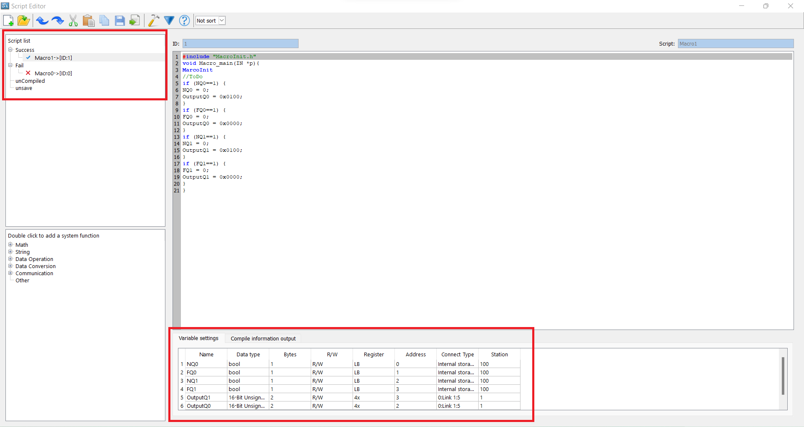

ข้อตกลงผู้อ่าน
***ข้อมูลจากบล็อกนี้จัดทำเมื่อวันที่ 10/09/2567***
HMI Samkoon
**HMI (Human-Machine Interface) Samkoon** คืออุปกรณ์ที่ช่วยให้ผู้ใช้งานสามารถโต้ตอบกับเครื่องจักรหรือระบบอัตโนมัติได้ โดย Samkoon เป็นผู้ผลิต HMI ที่มีชื่อเสียงและถูกใช้ในงานอุตสาหกรรมหลากหลายประเภท มีคุณสมบัติที่เน้นความสะดวกในการใช้งาน ความยืดหยุ่นในการเชื่อมต่อกับอุปกรณ์ต่างๆ และการแสดงผลที่ชัดเจน
รายละเอียดของ HMI Samkoon
1. การแสดงผล (Display)
- หน้าจอ HMI Samkoon มีให้เลือกหลายขนาด ตั้งแต่ 4.3 นิ้ว, 7 นิ้ว, 10 นิ้ว, ไปจนถึง 15 นิ้ว เพื่อให้เหมาะสมกับความต้องการของแต่ละงาน
- จอภาพรองรับความละเอียดสูง มาพร้อมหน้าจอแบบ **LCD** หรือ **TFT** ที่ให้สีสันสดใสและการแสดงผลที่คมชัด
- ระบบสัมผัส (Touchscreen) แบบ capacitive หรือ resistive ขึ้นอยู่กับรุ่น ช่วยให้ผู้ใช้งานสามารถโต้ตอบกับเครื่องจักรได้อย่างง่ายดาย
2. การเชื่อมต่อกับอุปกรณ์อื่นๆ
- HMI Samkoon รองรับการเชื่อมต่อกับ PLC หลายยี่ห้อ เช่น Siemens, Mitsubishi, Omron, Schneider Electric, Delta และอื่นๆ ผ่านโปรโตคอลการสื่อสาร เช่น **RS232**, **RS485**, **Ethernet**, และ **Modbus**
- การรองรับ **Modbus RTU/Modbus TCP** ช่วยให้การเชื่อมต่อและควบคุมระบบอัตโนมัติเป็นไปได้อย่างสะดวก
- สามารถเชื่อมต่อกับอุปกรณ์เสริม เช่น เครื่องพิมพ์ และอุปกรณ์จัดเก็บข้อมูล (USB/SD Card)
3. การใช้งานและโปรแกรม (Software and Programming)
- สามารถเขียนโปรแกรมผ่านซอฟต์แวร์เฉพาะของ Samkoon เช่น **SKWorkshop** ซึ่งออกแบบหน้าจอและโปรแกรมควบคุมต่างๆ ได้
- ซอฟต์แวร์นี้มีอินเทอร์เฟซที่ใช้งานง่าย ผู้ใช้สามารถลากและวางวัตถุ (Object) ลงในหน้าจอได้อย่างสะดวก เช่น ปุ่ม, กราฟ, และตัวบอกสถานะ
- รองรับการแสดงข้อมูลแบบ **Real-time** เช่น แผนภูมิการทำงานของเครื่องจักร การวัดค่าจากเซ็นเซอร์ หรือการแจ้งเตือนเหตุการณ์สำคัญ
4. คุณสมบัติเด่น (Features)
- การควบคุมจากระยะไกล (Remote Control): สามารถควบคุมเครื่องจักรจากระยะไกลผ่านเครือข่ายอินเทอร์เน็ต
- Data Logging: บันทึกข้อมูลการทำงานเพื่อวิเคราะห์
- Alarm and Notification: แจ้งเตือนเมื่อเกิดความผิดปกติในระบบหรือเมื่อค่าตัวแปรเกินขีดจำกัด
- Multi-language Support: รองรับหลายภาษา รวมถึงภาษาไทย
5. ความทนทานและความเสถียร (Durability and Reliability)
- ถูกออกแบบให้มีความทนทานสูง รองรับการใช้งานในสภาวะแวดล้อมที่หนัก เช่น ความชื้น ฝุ่น และการสั่นสะเทือน
- มีการป้องกันระดับ **IP65** ช่วยป้องกันฝุ่นและน้ำเข้าสู่ตัวอุปกรณ์
- ออกแบบมาให้ทำงานได้ต่อเนื่องตลอด 24 ชั่วโมง เหมาะสำหรับโรงงานอุตสาหกรรมที่ต้องการความเสถียรสูง
สรุป
**HMI Samkoon** เป็นอุปกรณ์ที่มีความยืดหยุ่นสูงในการใช้งานและการเชื่อมต่อ รองรับการใช้งานในหลากหลายภาคอุตสาหกรรม ด้วยฟีเจอร์ที่ทันสมัย ความทนทาน และการออกแบบที่ใช้งานง่าย ทำให้ HMI Samkoon เป็นตัวเลือกที่ดีสำหรับงานควบคุมเครื่องจักรและระบบอัตโนมัติ
การตั้งค่า Modbus และการเชื่อมต่อ
- LOGOSoft Code:
- Right Click → Add Server Connection → Modbus Communication
- Modbus TCP at IP and Port = 502
- ตั้งค่า Modbus Connection และการเชื่อมต่อด้วย Modbus Poll
- การเชื่อมต่อด้วย Python:
- ติดตั้ง pymodbus
- import pymodbus
- อ่านค่าด้วยการเขียนโค้ด

from pymodbus.client import ( ModbusSerialClient, ModbusTcpClient, ModbusTlsClient, ModbusUdpClient ) from pymodbus.transaction import ( ModbusAsciiFramer, ModbusBinaryFramer, ModbusRtuFramer, ModbusSocketFramer, ModbusTlsFramer ) client = ModbusTcpClient(host='192.168.1.44', port=502, framer=ModbusSocketFramer) def WriteData(slave_id, address, count, value): client.write_registers(address, [value]*count, unit=slave_id) def ReadData(slave_id, address, count): x = client.read_holding_registers(address, count, unit=slave_id) print(x.registers) def ReadCoil(slave_id, address, count): x = client.read_coils(address, count, unit=slave_id).bits print(x) def WriteCoil(slave_id, address, count, value): if value == "ON": status = True else: status = False x = client.write_coils(address, [status]*count, unit=slave_id) # print(x) def WriteString(slave_id, address, count, value): client.write_registers(address, [0] * count, unit=slave_id) if len(value) % 2 > 0: value = value + " " # เติมช่องว่างถ้าจำนวนตัวอักษรไม่เป็นคู่ c = len(value) // 2 # จำนวนรอบการเขียนข้อมูล (2 ตัวอักษร ต่อ 1 register) for i in range(c): y = value[0 + (2 * i):2 + (2 * i)] # แยกตัวอักษร 2 ตัวต่อรอบ print(y) a = [hex(ord(r))[2:4] for r in y] # แปลงเป็นเลขฐาน 16 print(a) k = int(a[0] + a[1], 16) # รวมเป็นเลขฐาน 16 client.write_registers(address + i, k, unit=slave_id) # เขียนลง register # ทดสอบการเชื่อมต่อ print(client.connect()) # ทดสอบการเรียกใช้ฟังก์ชันต่าง ๆ # WriteData(1, 0, 2, 555) # WriteCoil(1, 0, 8, "ON") # ReadData(1, 0, 8) # ReadCoil(1, 0, 8) # WriteString(1, 0, 8, "banana") - ทดสอบปิดเปิดไฟด้วย code
# เปิด Q1 ที่ Word Address = 3 (Byte Address = 6)
print("on Q1: Word Address = 3 (Byte Address = 6)")
WriteData(1, 3, 1, 0x0100) # force ID=1, WordAddr=3, nData=1, Word Data = 0x0100
ReadData(1, 0, 4) # Read ID=1, WordAddr=0, nData=4 Word
# ผลลัพธ์ที่ได้: [0, 0, 256, 256]
# ปิด Q1 ที่ Word Address = 3 (Byte Address = 6)
print("Off Q1: Word Address = 3 (Byte Address = 6)")
WriteData(1, 3, 1, 0x0000) # force ID=1, WordAddr=3, nData=1, Word Data = 0x0000
ReadData(1, 0, 4) # Read ID=1, WordAddr=0, nData=4 Word
# ผลลัพธ์ที่ได้: [0, 0, 0, 0]
- ตั้งค่า link
- เพิ่ม Numeric Display, Bit Lamp, Bit Switch

การเขียน Script

Script → Global Script
New Script Name = pkControl, Frequency = 50
Code ที่ใช้:
#include “MacroInit.h”
void Macro_main(IN *p){
MarcoInit
if (NQ0==1) {
NQ0 = 0;
OutputQ0 = 0x0100;
}
if (FQ0==1) {
FQ0 = 0;
OutputQ0 = 0x0000;
}
}